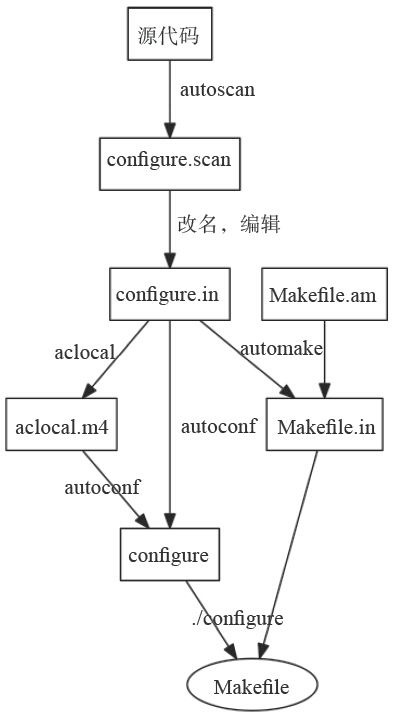

20.4 FreeSWITCH源代码的编译
关于FreeSWITCH的编译，我们在第3章中的编译安装中已经提到了。在这里，我们再复习一下，并了解一些开发者需要注意的问题。在此，我们主要以在Linux系统上的编译为例。Windows平台上的编译过程及注意事项可以参考第3章的相关内容。
20.4.1 首次编译
在编译源代码前，请确保安装了第3章中所讲的与安装相关的依赖库及开发包。Free-SWITCH在开发中使用经典的gcc、Makefile及automake、autoconf、libtool等GNU工具链，因而在各种平台上都很容易进行编译。
为了照顾不了解这些GNU工具链的读者，我们在此也顺便简单讲一下与GNU工具链相关的基础知识。
FreeSWITCH主要是用C和C++编写的。编译C语言的程序一般需要gcc，如下命令会编译test.c并生成一个可以执行的二进制程序：
gcc test.c -o test
当源代码文件数量过多时，一行一行地执行gcc就比较累了。因此，可以编写简单的Shell脚本或Makefile实现。Makefile是Make工具使用的文件，它除了能定义源文件到目标文件的编译方法外，还能定义这些文件的依赖关系。通过检查这些依赖关系，如果在下次编译时源文件没有修改过，则可以不用重复编译，因而可以大大加快编译速度。
不同平台上的工具链是不一样的，在Linux等开源平台上一般使用gcc，而在其他商业的UNIX系统上往往都有各厂商自己的编译工具链。为了屏蔽这些不同，一种称为automake的工具出现了。通过编写configure脚本，定义一些宏，可以在编译前自动检测当前的平台环境和工具链，以生成适当的Makefile。
当工程更大的时候，写configure脚本也是很累人的，因而又有人发明了automake和autoconf，通过定义更简单的宏（m4宏），可以自动生成configure脚本。
总之，通过这些工具和跨平台的宏定义便可以在不同的平台上生成不同的Makefile，进而可以进行编译。生成Makefile的总体流程如图20-1所示。读者可以结合FreeSWITCH的编译过程深入理解一下，在此我们就不多讲了。

图20-1 Makefile的生成过程
如果你是从Git仓库中克隆的源代码，要进行编译，则需要先执行一下bootstrap.sh。它会执行一些初始化操作，生成configure文件。
./bootstrap.sh
如果是直接下载的源代码Tar包，则不需要这一步，因为源代码在进行tar操作之前就已经执行过该步骤了。
接下来，执行configure，它会生成Makefile：
./configure
configure有很多参数，其中比较常用的是prefix参数，用于将FreeSWITCH安装到指定的目录下（FreeSWITCH默认的安装目录是/usr/local/freeswitch），如：
./configure --prefix=/usr/local/freeswitch2
./configure --prefix=/opt/freeswitch
configure执行完毕后，将产生Makefile，以及一个modules.conf文件。modules.conf用于控制在编译阶段要自动编译哪些模块。如果你需要这些模块，则可以编辑该文件，并去掉前面的“#”号注释，如：
$ head modules.conf
#applications/mod_abstraction
#applications/mod_avmd
#applications/mod_blacklist
#applications/mod_callcenter
#applications/mod_cidlookup
applications/mod_cluechoo
applications/mod_commands
applications/mod_conference
#applications/mod_curl
applications/mod_db
如果不知道哪些模块是干什么的，可以暂且不管这个文件。到以后也可以再单独编译某些模块。
接下来，执行make，它将根据Makefile进行编译：
make
编译成功后，执行如下命令将程序安装到相应的位置：
make install
注意，需要确认要安装的目标位置有写入的权限，如果这些命令都是以root执行的，那你不会遇到权限的问题，但如果你是以普通用户执行的，就可能遇到权限的问题。所以，如果有权限的问题，可以尝试用root进行安装：
sudo make install
也可以通过如下方案以普通用户的身份安装，如以freeswitch用户安装，假设你现在登录的用户就是freeswitch：
sudo mkdir /usr/local/freeswitch #
用root
身份创建目录
sudo chown freeswitch /usr/local/freeswitch #
把目录的属主改为freeswitch
make install #
用freeswitch
普通用户身份安装即可
20.4.2 增量编译
有时候我们修改了源文件，需要再次编译。在没有修改autoconf、automake相关的编译规则的话，直接执行make就行了：
make
也可以直接执行如下命令：
make install
make会检查全部的规则，并决定哪些需要重新编译，这还是比较耗时的。如果你知道自己修改了哪些模块，可以直接编译该模块，如：
make mod_sofia
make mod_sofia-install
使用这种方法也可以编译默认没有编译过的模块，如mod_shout模块提供MP3录、放音的支持，它默认是不被编译的，可以用以下命令安装：
make mod_shout-install
当然，在大多数情况下，你也可以直接进入相关的模块目录下，执行make，如：
cd src/mod/endpoints/mod_sofia
make install
如果你改了核心的代码，则可以执行如下命令仅编译安装核心部分：
make core-install
20.4.3 常见问题及最佳实践
如果在编译过程中出现某个或某些模块编译不通过的情况，可以先在modules.conf中将该模块注释掉，等全部的编译通过后，再单独检查该模块有什么问题。
如果跟笔者一样，你经常在不同的分支中切来切去，且分支差异比较大时编译系统中的目标文件可能会发生混乱。这可能是编译规则设置的问题，但FreeSWITCH项目太大了，因而笔者经常在不同的目录中编译不同的分支，以避免这种混乱。如下列命令编译最新的master版本到默认位置：
git clone git://git.freeswitch.org/freeswitch.git freeswitch-master
cd freeswitch-master
./bootstrap.sh && ./configure && make && make install
编译1.2版本并安装到/usr/local/freeswitch-1.2：
git clone git://git.freeswitch.org/freeswitch.git freeswitch-1.2
cd freeswitch-1.2
git checkout v1.2.stable
./bootstrap.sh && ./configure --prefix=/usr/local/freeswitch-1.2
make && make install
通过这种方式，以后在维护多个分支时就不会混乱了，而且如果有必要的话，也可以同时在一台主机上同时启动不同版本的FreeSWITCH实例（参见13.1节）。